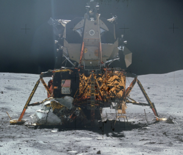

Apolo 11: Como o homem chegou à Lua
No dia 16 de julho de 1969, o foguete Saturno V partiu do cabo canavial na Flórida levando 3 astronautas - Michael Collins, Buzz Aldrin e Neil Armstrong - dando início à Apollo 11, a missão que fez com que o homem pissase na Lua.
Saturno V
O Saturno V foi o foguete usado nas missões Apolo e Skylab. Foi desenvolvido por Wernher von Braun e possui três estágios. Ele continua a ser o foguete mais alto, mais pesado e mais potente já operado, detendo ainda o recorde de maior e mais pesada carga útil já lançada à órbita terrestre baixa.
Vemos nas imagens os três estágios do foguete Saturno V
Neil Armstrong
O astronauta americano Neil Armstrong, foi o primeiro homem a pisar na Lua. Quando Armstrong pisou na superfície lunar, ele proferiu a famosa frase "É um pequeno passo para [um] homem, um salto gigante para a humanidade"
Neil Armstrong e Buzz Aldrin pousaram na Lua através de um Módulo Lunar, enquanto Michael Collins viveu momentos de solidão permanecendo na órbita lunar dentro do Módulo de Comando e Serviço.
Depois desse marco histórico para a humanidade, mais 9 americanos pisaram na Lua. Todas as alunissagens tripuladas ocorreram entre julho de 1969 e dezembro de 1972 como parte do Programa Apollo.
Então é isso! Espero que você tenha gostado do nosso conteúdo da semana sobre a missão Apollo 11!